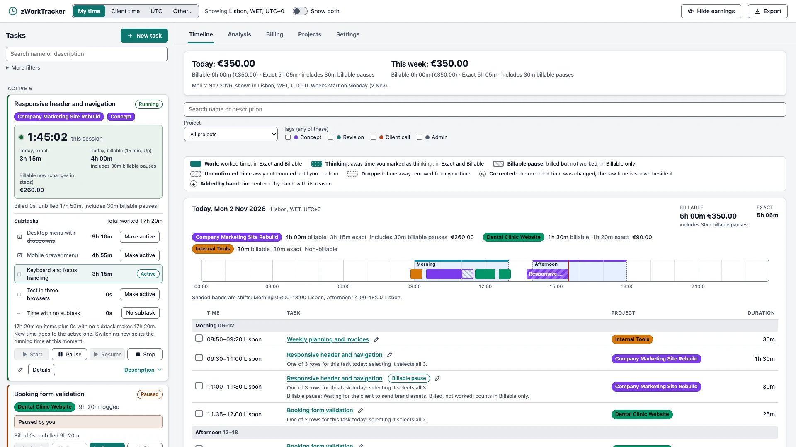
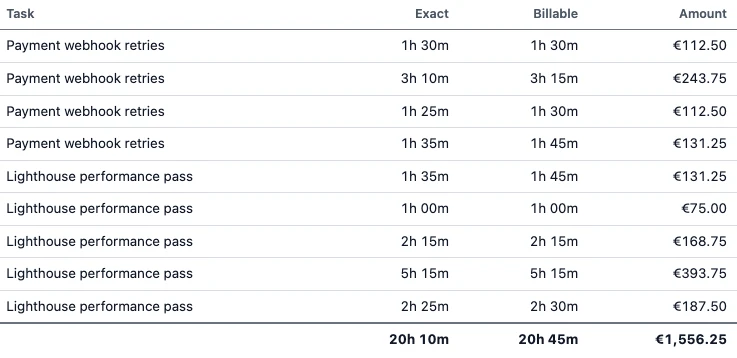
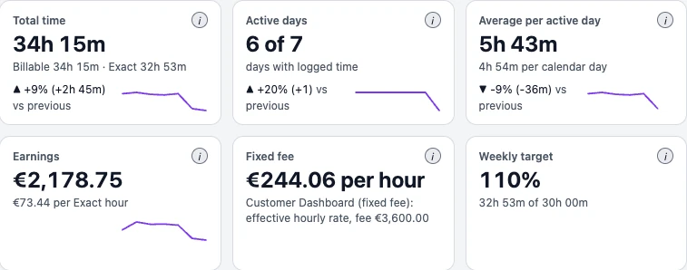

How to use zWorkTracker
From your first timer to a billing summary, task by task. For every detail, see the full user guide in the README on GitHub.
Get started
Install
Install zWorkTracker from its Microsoft Store page. It needs the Microsoft Edge WebView2 Runtime: Windows 11 includes it, and some Windows 10 PCs may need to install it.
Before you install, read the notices. In short: uninstalling removes the app's local data unless you have connected a OneDrive or Google Drive folder, and the app is built for one device at a time.
First-run setup
The first launch opens a short setup. It walks through:
- The theme, with a live preview.
- Your time zone and your client's.
- Time rules. The default bills in 15-minute steps, rounded up.
- A first project.
- Work shifts, starting from presets.
- A sync folder. Detected OneDrive and Google Drive folders are listed, and nothing is turned on unless you tick it.
Each step has Back and Skip, and Finish with defaults ends setup in one click. Setup logs no time. To go through it again later, use Run setup again in Settings: it changes settings only after you confirm and never touches your data.
Create a project and a task
- Open Projects and create a project with a unique name and a colour. A free colour is suggested. Add a price per hour now or later.
- Press New task. Give it a name, choose the project, and write a description. If you have tags, add at least one.
The first task after each launch starts from an empty form, and the description is required. Once you have worked in this launch, New task starts from a copy of your most recent task, and only the name and project are required. A copy is a separate task, so editing it never changes the original.
Start the timer
Press Start on the task. The timer runs on the task's card, and the time is recorded with exact start and end times. Only one task runs at a time: starting another pauses the one that was running, and the app tells you.
Daily use
Start, pause, resume, stop
| Task state | Buttons you can use |
|---|---|
| Draft | Start |
| Running | Pause, Stop |
| Paused | Resume, Stop |
| Stopped | None. Stopped is final. |
Paused time is left out of the total. After you quit and reopen the app, Resume on a paused task opens the new-task form instead. Submitting it creates a new task linked to the paused one, and the paused one stays as it was.
Use the mouse for these buttons. The Space bar never starts, pauses, resumes or stops a timer, so a stray key press can't change one. Enter on a focused button still works.
The tray
- Closing the window with X hides it to the tray. The app keeps running, and a running task keeps timing.
- Left-click the tray icon to show the window. Its menu has Show, the current task with its elapsed time, Pause or Resume, and Quit.
- Only Quit really exits. A running task is paused at that moment.
Time away
While a task runs, the app notices when the PC sleeps, the session is locked, or nobody touches the keyboard or mouse for the idle limit (10 minutes by default). When you come back, it asks what to do with that time:
- Keep counts it as work.
- Drop leaves it out.
- Thinking counts it, and reports it separately.
Until you answer, the time doesn't count. The recorded times stay as they were, whatever you choose.
The timeline
The main screen shows the period total, then each day with the newest first. Every day has an axis with blocks in project colours, and its entries are grouped into Night, Morning, Afternoon and Evening. Day headers show Billable and Exact totals, and totals per project with earnings.

Click an entry to select it, Ctrl+click to add or remove one, and Shift+click to select a run. The selection bar shows the count and the billable total, and can export just those entries. The search box filters tasks by name and description, together with project and tags.
Corrections and hand-entered time
From a task's details you can add time the app didn't log, correct a segment's start and end, or void a segment and bring it back. Each asks for a reason where it helps, and warns about overlaps.
Nothing is overwritten: the recorded times stay, the correction sits beside them, and the history lists every change with when, what and why. You can't correct a running segment, or time that is on a billing summary until that summary is voided.
Subtasks
Subtasks are the items of a task list in the task's description:
- Open the task for editing, click in Description and press the Task list button (☑≡) in the formatting bar.
- Type one subtask per line, pressing Enter between them, and save the task.
- On the task card, each subtask shows its own time. Press Make active on the one you are working on. The button works only for saved items.
One subtask is active at a time, and new time goes to it. Switching while the task runs splits the time at that moment, so the task total stays the sum of its parts. Tick an item when it is done. Deleting the active item from the description clears the active subtask.
Tags and templates
Tags have a name and a colour, and four starter tags come with the app. New tag, beside the tag picker, opens Settings at the form for a new tag, and Back to task returns you to the form with what you typed. Analysis breaks time down by tag.
A template keeps a task's name, description, project and tags. Creating a task from it gives you a fresh draft with its subtasks unticked.
Billing
Prices and currency
Set a price per hour on a project, in EUR or USD. Leaving it blank means no rate, which differs from a rate of 0. A new price applies from now, so past earnings don't change; to backdate one, choose a date and confirm. Turn off billable for a project that earns nothing. EUR and USD totals are shown side by side, never added together.
Fixed fees and budgets
A project can bill a fixed fee instead of hourly. It earns the fee, and Analysis shows its effective hourly rate: the fee divided by billable hours. A budget, in hours or as the fee, warns you at 80% and at 100%.
Increments and rounding
Billable time is rounded per task per day. The default is 15 minutes, rounded Up. You can choose Off, 1, 5, 6, 10, 15, 30 or 60 minutes, or your own number, rounded Up, Nearest or Down, and a project can have its own setting.
- With 15 minutes Up, 1 minute bills 15, exactly 15:00 stays 15:00, and 15:01 bills 30:00.
- The recorded times are never rounded. Exact is what happened and Billable is what you can bill, and both are always shown.
Billable pauses
Mark a pause as billable when you were still working, for example on a call. It counts in Billable and earnings, but never in Exact, and it is reported on its own.
Billing summaries
- In Billing, pick a project and a period to see the unbilled time per task and day.
- Answer any time away first: unanswered time is left out of the summary.
- Press Create summary. It is frozen with a reference such as A-001, and that time is marked billed.
- Copy it, or export it as CSV. Voiding a summary puts its time back to unbilled.

Billing summaries are for your own guidance. They are not invoices, accounting or tax advice, so check them before you bill a client.
Timesheet PDF
Create a PDF timesheet for a period, with or without prices, in your client's zone, and with your logo (PNG) if you add one. It is made on your PC. Japanese, Chinese, Korean, Hebrew, Arabic and emoji print as empty boxes in the PDF, and the export tells you when that happens; Excel and CSV show them normally.
Excel and CSV
Export asks for the format, the zones and whether to include earnings. Turn earnings off for a file a client will see, and no price data appears anywhere in it. The Excel workbook has sheets for labor by project, segment details, earnings when included, and analytics. With entries selected on the timeline, you can export just the selection.
Analysis
Periods and comparison
Choose a day, week, month, quarter, year or a custom range, and filter by project, task, tag, band, shift or text. Compare with the previous period sets each figure beside the same length of time before it.
Metrics
Sections cover volume, time of day, projects, tasks, focus and sessions, consistency, goals and money, shifts and zones. Every metric has an info button and an entry in the searchable Metrics glossary. Every chart has a View data table, and clicking a chart shows the tasks behind it. Insights are written from your numbers, with no AI, and there is no productivity score. Analysis updates itself at least every 30 seconds while the window is visible, whether or not a task is running, and keeps your range, filters, chart level and open View data tables as they are.
Share of time
The share-of-time chart shows where the period's hours went. Each row of its legend gives the hours and the share, for example Client website 16h 50m (47%). The hours follow the Billable/Exact switch and your filters and add up to the total in the middle, and the shares add up to 100%.
- Projects, Tasks, Subtasks or Tags chooses what each slice is. The chart starts at the level your filter leaves open: projects with no project filter, tasks for one project, subtasks for one task. Once you pick a level yourself, it stays until you switch it.
- Rows name only what the filter leaves open, such as Task · Project across projects or just the task within one. Subtask time with no subtask shows as (no subtask).
- With Tags, each slice is a tag combination, such as Design + Client, and time without tags is No tag. A task with several tags is counted once, under its combination.
- With many tasks, subtasks or combinations, the smallest are grouped as Other. View data lists every one.
To filter by tag, tick the tags you want: with none ticked, every task counts, and with some ticked, tasks with any of them count. No tag selects untagged tasks.

Time zones and Show both
Times are stored in UTC and shown in whichever zone you pick in the header: My time, Client time, UTC or Other. Set your zone and your client's in Settings, from a searchable list or a world map. A project can have its own client zone.
Turn on Show both to add a second axis in the client's zone, so an entry reads, for example, 14:00-16:30 Lisbon / 09:00-11:30 New York. The client's working hours are shaded. Daylight saving changes are handled for each moment, and the app marks them on the timeline.
Work shifts
In Settings, define shifts with a name, colour, times, weekdays and zone, starting from the Morning, Afternoon and Night presets. Shifts appear as bands on the timeline and have their own charts, such as scheduled versus worked time.
Your data
Backups
Once a day the app writes a dated copy of its data on your PC, keeping the newest 30 (you can choose 1 to 365). Restore in Settings first saves your current data as a safety copy, then rolls back. With sync on, newer records in your sync folder merge back in at the next sync, so turn sync off first to go back for good.
Folder sync on OneDrive and Google Drive
The app keeps everything on your PC and works offline. To keep a copy elsewhere, or to carry on from another PC, choose a folder of the OneDrive or Google Drive desktop app, in setup or in Settings. The provider's desktop app does the upload; zWorkTracker makes no network calls.
- Once it is on, sync runs by itself: at launch, shortly after each change, every 30 minutes, and when you quit.
- Settings shows each folder's status, such as "Written to OneDrive folder, 2 min ago". The app can confirm the write, not the upload.
- On a second PC, choose the same folder: the app shows what it holds and offers to connect and merge.
- Let sync finish on one PC before you work on another. The app is built for one device at a time.
- The files hold your full labor data, including prices, and the app doesn't encrypt them. Don't use a folder you share with other people.
Uninstalling removes the app's local data. A connected folder keeps a permanent copy, and its files stay until you delete them.
Hide earnings
Hide earnings in the header masks amounts everywhere, including the tray, and is remembered. Use it when a client may see your screen.
Themes
Choose Light, Solarized Light, Solarized Dark or Dark in Settings, on each PC. Project colours stay as you chose them in every theme.
More detail on every topic is in the README on GitHub. Questions: pmrj@rustcircle.com.